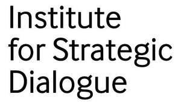
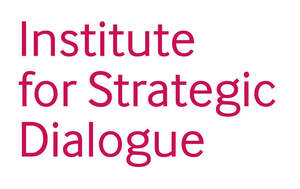

Trade Mark Journal No.2026/006 6 February 2026
UK00004319752 6 January 2026 (9,16,35,41,45)
Mark 1
INSTITUTE FOR STRATEGIC DIALOGUE
Mark 2

Mark 3

- Class 9
- Recorded and downloadable media; digital newspapers, magazines, periodicals, newsletters and other electronic publications, being downloadable or accessible on-line; downloadable podcasts; downloadable digital content; downloadable publications; electronic publications; downloadable newsletters, magazines, white papers, books, training manuals, assessments and questionnaires; podcasts; downloadable podcasts; vodcasts; downloadable vodcasts; videocasts; downloadable videocasts; all the aforesaid relating to political and ideological polarisation, extremism, radicalisation, information manipulation, democratic integrity, terrorism and/or to issues relating to counter-terrorism, homeland security, counter-polarisation, counter-extremism, counter-radicalism, and emerging security matters.
- Class 16
- Printed matter; instructional and teaching materials (other than apparatus); printed publications, books, booklets, manuals, brochures, magazines, newsletters, datasheets, photographs, periodical publications, newspapers and journals; all the aforesaid relating to political and ideological polarisation, extremism, radicalisation, information manipulation, democratic integrity, terrorism and/or to issues relating to counter-terrorism, homeland security, counter-polarisation, counter-extremism, counter-radicalism, election integrity and emerging security matters.
- Class 35
- Public advocacy services; promoting public awareness of issues relating to political and ideological polarisation, extremism, radicalisation, terrorism, information manipulation, democratic integrity and emerging security challenges; compilation of political statistics; promoting humanitarianism activities; statistical analysis and compilation; statistical modelling services; compiling of information into databases; compilation of political statistics; information, consultancy and advisory services relating to all the aforesaid services.
- Class 41
- Educational and training services; provision of online educational resources and material; publication of newspaper, magazines (periodicals), text, periodicals, books, reading materials and instructional materials and other printed matter, including online; online publishing services; creation of podcasts, vodcasts and videocasts; educational research services; organisation of lectures, seminars, symposia, exhibitions, congresses and conferences; provision of on-line educational workshops featuring interactive training programs, modules, databases and toolkits; all the aforesaid services relating to political and ideological polarisation, extremism, radicalisation, terrorism, emerging security challenges and/or provided in the fields of counter-terrorism, homeland security, counter-polarisation, counter-extremism, counter-radicalisation, election integrity and emerging security matters; information, consultancy and advisory services relating to all the aforesaid services.
- Class 45
- Research, analysis and consultancy services; political research and analysis; advisory services relating to political information and public policy; representation of public interests before governmental and regulatory bodies; security assessment of risks; all the aforesaid services relating to political and ideological polarisation, extremism, radicalisation, terrorism, information manipulation, democratic integrity, emerging security challenges and/or provided in the fields of counter-terrorism, homeland security, counter-polarisation, counter-extremism, counter-radicalisation, and emerging security matters; consultancy in the field of data theft and identity theft; information, consultancy and advisory services relating to all the aforesaid services.
Institute for Strategic Dialogue
Representative: Stevens Hewlett & Perkins